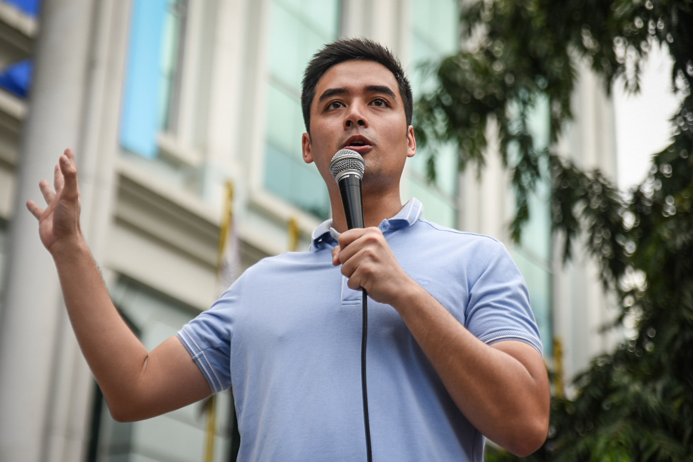
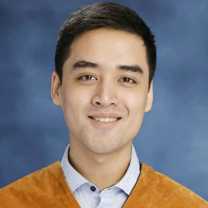
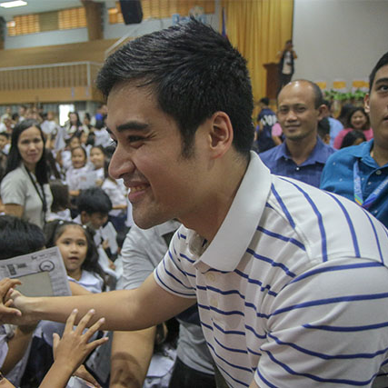
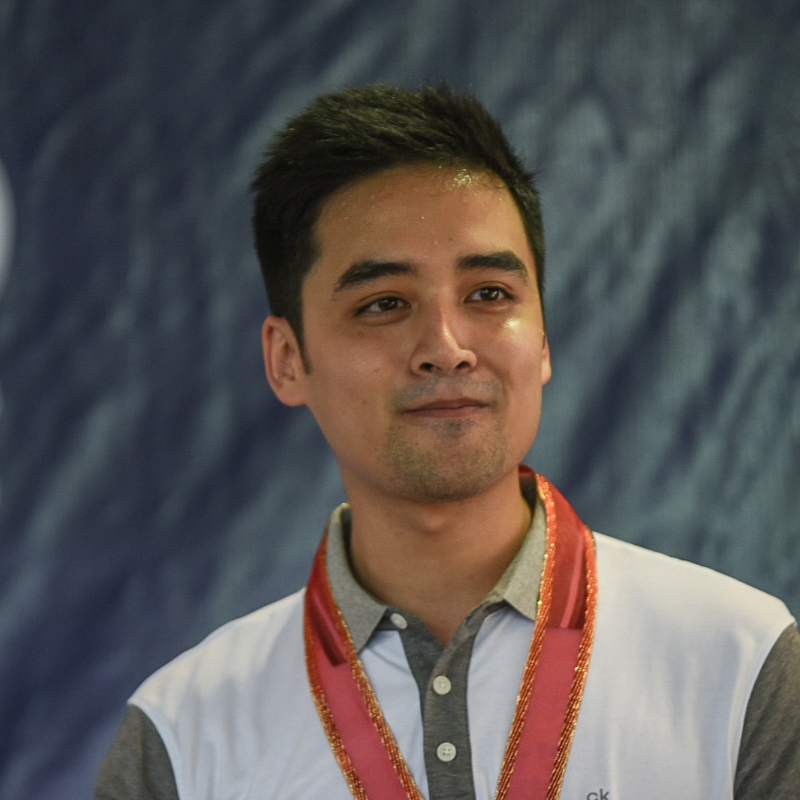

Vico Sotto

Vico Sotto speaking to the public
Early Life to Young Adulthood

- Sotto was born on June 17, 1989 to actors Vic Sotto and Coney Reyes.
- Unlike his parents, Sotto preferred to maintain a low profile and at the early age of 10, he had already shown interest in government affairs.
- Sotto graduated from the Ateneo de Manila University with a Bachelor of Arts degree in political science in 2011.
- Sotto worked as a legislative staff officer for the Quezon City Council from 2013 to 2015.
- Sotto made his first elected office as a member of the Pasig City Council in 2016.
- During his term as a Councilor, he faced stiff opposition to his initiatives due to being an independent politician. As a result, he was forced to strategize, sacrificing some of the measures he wanted to pass in favor of those he thought most important.
- Sotto focused his attention on the “Pasig Transparency Mechanism Ordinance” which seeks the disclosure of public records, including financial documents and contracts, upon request by ordinary citizens. Upon its passage, it became the first-ever localized version of the freedom of information law in Metro Manila.
- Sotto pursued a post-graduate degree in public administration at the Ateneo School of Government and graduated in 2018.
Pasig Mayoral Race

- Just after his 1st term as a City Councilor, Sotto decided to run for the office of Mayor of Pasig City.
- Sotto would challenge the leadership of Pasig’s 27-year ruling clan, the Eusebios.
- He campaigned on a platform that he called his “Big V” (Big Five) Agenda, saying he planned to focus on universal healthcare, housing programs, education, public consultation and anti-corruption efforts.
- During the 2019 elections, Vico Sotto easily became a favorite among Pasig City residents as well as—and perhaps most importantly—internet dwellers. On Karen Davila’s show, Headstart on ANC, he was asked how, if he were to be elected, he would spend Pasig’s 10.7B budget. Allocating a quarter of that amount, he said, he’d like to fully implement universal healthcare and reduce infrastructure spending. When Karen asked him if he could resist corruption, he said yes without even skipping a beat. To this day, that clip of him is still the pinned tweet on his Twitter account, sitting on top of his profile with a total of over 47,000 likes and 6,000 retweets.
- Vico Sotto defeated incumbent mayor Robert Eusebio in the 2019 Pasig local elections, ending the 27-year rule of the Eusebio family over the Pasig City Mayoralty. He was sworn into office on June 30, 2019.
Post-Election

- Sotto has become popular to the younger generation due to his humility, competence and transparency in carrying out his duties as a public servant.
- He regularly reaches out to his constituents using his social media accounts on Facebook and Twitter. Numerous tweets of Sotto have become trending and well-received by the public for having a strong sense of servant leadership.
- Sotto received significant positive attention in both traditional and social media in response to Pasig's quick, data-driven responses to the COVID-19 pandemic, and the resulting 2020 Luzon enhanced community quarantine beginning March 17, 2020.
- On February 2021, Vico Sotto, the mayor of Pasig City in Metro Manila, has been named as one of 12 global anticorruption champions by US President Joe Biden's administration. In a statement announcing the winners of the inaugural International Anticorruption Champions Award, the US State department recognised Mayor Vico Sotto, a Gen.T honouree, as "a standard-bearer for a new generation of Philippine politicians who prioritise anticorruption and transparency initiatives in their election campaigns and in office."
Learn more about Vico Sotto